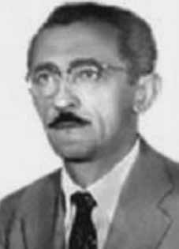

Severino
Elias
de Mello
CIRCUNSTÂNCIAS DA MORTE
Severino Elias de Mello morreu no dia 30 de julho de 1965, após ter sido preso por agentes militares no Rio de Janeiro. Dois dias antes da sua morte, Severino foi detido para averiguações, por ordem do encarregado de um Inquérito Policial Militar (IPM) instaurado no Núcleo do Parque de Material Bélico da Aeronáutica. Logo em seguida, foi conduzido por oficiais da Aeronáutica, todos à paisana e com metralhadoras, para a Base Aérea do Galeão, onde ficou incomunicável. No dia 30 de julho, foi oficialmente declarado morto por suicídio. De acordo com a versão oficial dos fatos veiculada à época pelos órgãos de segurança do regime militar, Severino teria se suicidado no início da madrugada do dia 30 de julho, nas dependências da Base Aérea do Galeão, por meio de enforcamento com lençol. O registro de ocorrência no 1.122, da 37ª DP, de 30 de julho de 1965, corrobora a versão oficial de suicídio. A certidão de óbito no 29.424 teve como declarante Dalton Pereira de Souza e foi firmado por Cyríaco Bernardino de Almeida Brandão. Ao saber da prisão do pai, sua filha destruiu todas as provas que pudessem revelar o envolvimento de Severino Elias com Luiz Carlos Prestes e com o Partido Comunista, tais como armas e fotos. Ela tomou conhecimento da morte de Severino no dia 30 de julho, quando recebeu em sua casa uma visita de oficiais da Aeronáutica que lhe entregaram uma nota oficial afirmando que seu pai havia se suicidado. Após notificarem a morte de Severino, os agentes militares revistaram toda a residência. Segundo o relato da filha de Severino, após observar que os oficiais militares não haviam encontrado nada, murmurou: “não encontraram o que procuravam?”. Os militares, então, arrastaram-na para dentro de um veículo, jogando seu filho, que estava em seus braços, no chão. Posteriormente, ela foi encaminhada ao Departamento de Material Bélico da Base Aérea do Galeão, onde foi interrogada pelo investigador Nelson Duarte, do Departamento de Ordem Política e Social (DOPS). O agente buscou por meio de ameaças à sua família, obter informações sobre quem era a pessoa para a qual Severino havia escrito uma carta antes de morrer, onde constavam recomendações e despedidas. Passado algum tempo, a filha de Severino foi liberada devido à ação de seu marido e à pressão realizada pela imprensa, que permaneceu nas proximidades do local onde estava detida. O corpo de Severino Elias de Mello foi entregue à sua família e seus restos mortais foram enterrados no Cemitério da Cacuia, no Rio de Janeiro.
Severino Elias de Mello died on July 30, 1965, after being arrested by military agents in Rio de Janeiro. Two days before his death, Severino was detained for investigations, by order of the person in charge of a Military Police Inquiry (IPM) established at the Air Force Ordnance Park Center. Soon after, he was taken by Air Force officers, all in civilian clothes and with machine guns, to the Galeão Air Base, where he was held incommunicado. On July 30, he was officially declared dead by suicide. According to the official version of the events published at the time by the military regime's security bodies, Severino committed suicide in the early morning of July 30, on the premises of the Galeão Air Base, by hanging himself with a sheet. Occurrence record no. 1,122, from the 37th DP, dated July 30, 1965, corroborates the official version of suicide. Death certificate number 29,424 was declared by Dalton Pereira de Souza and signed by Cyrático Bernardino de Almeida Brandão. Upon learning of her father's arrest, his daughter destroyed all evidence that could reveal Severino Elias' involvement with Luiz Carlos Prestes and the Communist Party, such as weapons and photos. She learned of Severino's death on July 30, when she received a visit from Air Force officers at her home who gave her an official note stating that her father had committed suicide. After notifying Severino's death, military agents searched the entire residence. According to the report of Severino's daughter, after observing that the military officers had not found anything, he murmured: “didn't they find what they were looking for?” The soldiers then dragged her into a vehicle, throwing her son, who was in her arms, to the ground. She was later taken to the War Material Department at Galeão Air Base, where she was interrogated by investigator Nelson Duarte, from the Department of Political and Social Order (DOPS). The agent sought, through threats to his family, to obtain information about who was the person to whom Severino had written a letter before he died, which included recommendations and farewells. After some time, Severino's daughter was released due to her husband's actions and pressure from the press, which remained close to the place where she was detained. Severino Elias de Mello's body was handed over to his family and his remains were buried in the Cacuia Cemetery, in Rio de Janeiro.
Severino Elías de Mello murió el 30 de julio de 1965, tras ser detenido por agentes militares en Río de Janeiro. Dos días antes de su muerte, Severino fue detenido para investigaciones, por orden del responsable de la Investigación de la Policía Militar (IPM) establecida en el Air Force Ordnance Park Center. Poco después, fue conducido por oficiales de la Fuerza Aérea, todos vestidos de civil y con ametralladoras, a la Base Aérea de Galeão, donde permaneció incomunicado. El 30 de julio fue declarado oficialmente muerto por suicidio. Según la versión oficial de los hechos publicada en su momento por los órganos de seguridad del régimen militar, Severino se suicidó la madrugada del 30 de julio, en las instalaciones de la Base Aérea de Galeão, ahorcándose con una sábana. Registro de ocurrencia no. 1.122, del 37 DP, de 30 de julio de 1965, corrobora la versión oficial del suicidio. El acta de defunción número 29.424 fue declarada por Dalton Pereira de Souza y firmada por Cyrático Bernardino de Almeida Brandão. Al enterarse de la detención de su padre, su hija destruyó todas las pruebas que pudieran revelar la vinculación de Severino Elías con Luiz Carlos Prestes y el Partido Comunista, como armas y fotografías. Se enteró de la muerte de Severino el 30 de julio, cuando recibió la visita de oficiales de la Fuerza Aérea en su casa quienes le entregaron una nota oficial indicando que su padre se había suicidado. Tras notificar la muerte de Severino, agentes militares registraron toda la residencia. Según el relato de la hija de Severino, tras observar que los militares no habían encontrado nada, murmuró: “¿no encontraron lo que buscaban?”. Luego, los soldados la arrastraron hacia un vehículo y arrojaron al suelo a su hijo, que estaba en sus brazos. Posteriormente fue trasladada al Departamento de Material de Guerra de la Base Aérea de Galeão, donde fue interrogada por el investigador Nelson Duarte, del Departamento de Orden Político y Social (DOPS). El agente buscó, mediante amenazas a su familia, obtener información sobre quién era la persona a quien Severino le había escrito una carta antes de morir, que incluía recomendaciones y despedidas. Después de un tiempo, la hija de Severino fue liberada debido a la actuación de su marido y a la presión de la prensa, que se mantuvo cerca del lugar donde estaba detenida. El cuerpo de Severino Elías de Mello fue entregado a su familia y sus restos fueron sepultados en el Cementerio de Cacuia, en Río de Janeiro.